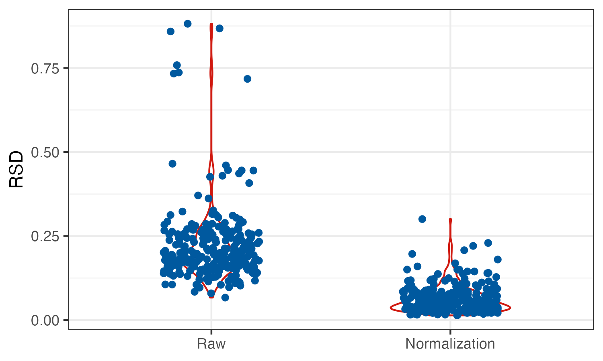

Chapter 3 数据前处理
3.1 代谢物鉴定
Level 1为通过参考标准品在相同分析条件下确证的化合物，包括匹配保留时间（RT）、一级（MS1）和二级（MS2）； Level 2为通过文献/公共库检索所得或者可能的断裂方式推测所得化合物； Level 3为根据某类化合物的特定碎片所推断的一类化合物； Level 4为根据质谱信息（例如：加和离子、同位素峰、碎片信息等）推测出分子式的化合物； Level 5为分离得到、有精确质荷比（m/z）且感兴趣的未知化合物。
3.2 代谢物名称统一
library(MNet)
compound_name <- c("1 Methylhistidine","1-Methylhistidine","L-1-Methylhistidine","N1-Methyl-L-histidine")
## 统一代谢物名称
result <- MNet::name2refmet(compound_name)
## 代谢物名称转换为KEGGID
name2keggid("1-Methylhistidine")
## 代谢物对应的通路
result_pathway <- name2pathway("1-Methylhistidine")
result_pathway$name2pathway
result_pathway$kegg_id
result_pathway$pathway3.3 批次矫正
3.3.1 data for SERRF
SERRF采用随机森林的方法来对非靶向代谢组学数据进行归一化,需要将下机数据转换为SERRF校正所需的格式才能进行归一化.准备好相应格式的文件后直接在SERRF网站上加载并进行归一化处理.
library(dplyr)
# Set result path
out.path <- file.path("result")
out.path
dir.create( out.path )
# 输入原始数据并转换为数据框
meta.data <- readxl::read_excel("raw_data/meta_data.xlsx") %>%
as.data.frame()
sample_order <- readxl::read_excel("raw_data/sample_order.xls") %>%
as.data.frame()
# 把数据调成SERRF所需的格式
overlap_sample <- intersect(names(meta.data),sample_order$sample)
qc_intersect_filter <- sample_order %>%
dplyr::filter(sample %in% overlap_sample) %>%
dplyr::arrange(time)
qc_intersect_filter$time <- seq(1,nrow(qc_intersect_filter))
meta.data_filter <- meta.data %>%
dplyr::select(c("label",qc_intersect_filter$sample))
batch <- c("batch",qc_intersect_filter$batch)
sampleType <- c("sampleType",qc_intersect_filter$sampleType)
time <- c("time",qc_intersect_filter$time)
label <- c(colnames(meta.data_filter))
all_result_temp <- rbind(batch,sampleType,time,label,meta.data_filter)
number <- c("","","","No",c(1:(nrow(meta.data_filter))))
serrf_data <- cbind(number,all_result_temp)
write.table(serrf_data,"result/02.test_for_serrf.txt",quote=F,row.names=F,sep="\t",col.names = T)输入原始数据文件并转换为数据框
meta.data
sample_order
输出符合serrf的格式的文件:02.test_for_serrf
3.3.2 对SERRF校正前后的数据进行PCA分析
library(dplyr)
library(ggplot2)
# SERRF校正前
before_normalization_raw <- data.table::fread("raw_data/test_for_serrf.txt") %>%
as.data.frame()
before_normalization <- before_normalization_raw %>%
t() %>%
as.data.frame() %>%
filter(!V4 %in% c("No","label"))
names(before_normalization) <- as.character(before_normalization_raw[,2])
names(before_normalization)[4] <- "sample_id"
# pca
before_batch <- as.character(before_normalization_raw[1,-c(1,2)])
before_type <- as.character(before_normalization_raw[2,-c(1,2)])
before_sample_id <- as.character(before_normalization_raw[4,-c(1,2)])
dd <- data.frame(type=before_type,batch=before_batch,sample_id=before_sample_id)
mydata_pca <- apply(before_normalization[,5:ncol(before_normalization)],2,as.numeric)
pca <- prcomp(log2(mydata_pca+1), center = T, scale. = T)
variance = pca$sdev^2/sum(pca$sdev^2)
pca.data = data.frame(pca$x,type=before_type,batch=before_batch,sample_id=before_sample_id)
p1 <- ggplot(pca.data,aes(PC1,PC2,color=type,shape=before_batch))+
geom_point()+
scale_color_manual(values=c("red","#3e68a0"))+
scale_shape_manual(values=seq(0,length(unique(before_batch))-1))+
#geom_text(aes(label=sample_id))+
theme_bw()+
theme(panel.grid.major = element_blank(),panel.grid.minor = element_blank())+
labs(x=paste0("PC1 (",signif(variance[1]*100,3),"%)"),
y=paste0("PC2 (",signif(variance[2]*100,3),"%)"))
# SERRF校正后
after_normalization_raw <- read.csv("SERRF/normalized by - SERRF.csv") %>%
as.data.frame() %>%
dplyr::distinct(label,.keep_all = T) %>%
tibble::column_to_rownames("label") %>%
t() %>%
as.data.frame() %>%
tibble::rownames_to_column(var="sample") %>%
dplyr::mutate(sample=gsub("X","",sample)) %>%
tibble::column_to_rownames("sample")
after_sample_id <- rownames(after_normalization_raw)
after_dd <- data.frame(sample_id=after_sample_id) %>%
dplyr::left_join(dd,by="sample_id")
mydata_pca <- apply(after_normalization_raw,2,as.numeric)
pca <- prcomp(log2(mydata_pca+1), center = T, scale. = T)
variance = pca$sdev^2/sum(pca$sdev^2)
pca.data = cbind(pca$x,after_dd)
p2 <- ggplot(pca.data,aes(PC1,PC2,color=type,shape=batch))+
geom_point()+
scale_color_manual(values=c("red","#3e68a0"))+
scale_shape_manual(values=seq(0,1))+
#geom_text(aes(label=sample_id))+
theme_bw()+
theme(panel.grid.major = element_blank(),panel.grid.minor = element_blank())+
labs(x=paste0("PC1 (",signif(variance[1]*100,3),"%)"),
y=paste0("PC2 (",signif(variance[2]*100,3),"%)"))
ggsave("result/02.pca_raw.pdf",p1,width=5,height = 3.9)
ggsave("result/02.pca_normalization.pdf",p2,width=5,height = 3.9)
ggsave("result/02.pca_raw.png",p1,width=5,height = 3.9)
ggsave("result/02.pca_normalization.png",p2,width=5,height = 3.9)pca_raw
pca_normalization

3.3.3 data filter
相对标准偏差(relative standard deviation,RSD) 是一种广泛使用的指标，通过将标准偏差除以算术平均值来计算QC中的每种代谢物i。这使得在所有可检测的代谢物中具有可比性的无单位和标准化测量。RSD越小代表代谢物越集中。通常需舍弃RSD超过30%的信号峰(数据质量太差).
library(dplyr)
library(ggplot2)
dat_raw <- data.table::fread("SERRF/QC-RSDs.csv") %>%
as.data.frame()
## 需要对样品进行质控，通常需舍弃RSD超过30%的信号峰(数据质量太差)
dat_rsd <- dat_raw %>%
dplyr::filter(SERRF <= 0.3)
#读取SERRF归一化后的数据
data_filter <- data.table::fread("SERRF/normalized by - SERRF.csv") %>%
as.data.frame() %>%
dplyr::filter(label %in% dat_rsd$label) %>%
dplyr::select("label",starts_with("sample"))
write.table(data_filter,"result/02.dat_filter.txt",quote=F,row.names=F,sep="\t")
# 可视化SERRF校正前后的数据
dat_melt <- reshape2::melt(dat_raw,id="label") %>%
dplyr::mutate(variable=ifelse(variable=="none","Raw","Normalization")) %>%
dplyr::mutate(variable=factor(variable,levels = c("Raw","Normalization")))
p <- ggplot(dat_melt,aes(x=variable,y=value))+
geom_violin(col="#D01910",width=.5)+
geom_jitter(width=.2,col="#00599F")+
theme_bw()+
labs(x=NULL,y="RSD")
ggsave("result/02.RSD.pdf",p,width=5,height = 3)
ggsave("result/02.RSD.png",p,width=5,height = 3)SERRF校正前后的对比 